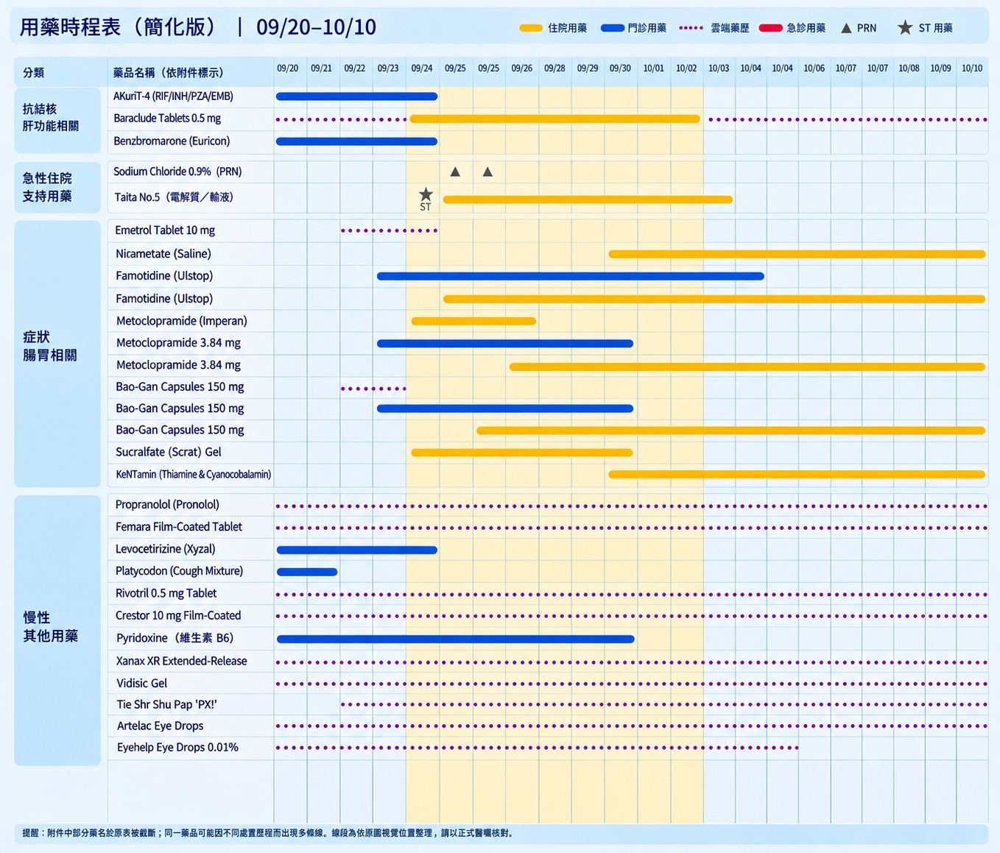

59歲女性 ｜ 乳癌病史 ｜ 抗結核用藥後急性肝炎與神經學病變評估
患者因發現右肺上葉 (RUL) 結節入院。進行了支氣管鏡及 CT 導引下切片，病理報告顯示壞死性肉芽腫發炎且 Acid-fast 染色陽性，確診為肺結核 (Mycobacterial infection)。
因確診結核病，患者於 8/7 開始服用抗結核藥物 AKuriT-4 (RIF/INH/PZA/EMB)，並預防性給予 Pyridoxine，乳癌標靶藥物 Palbociclib 暫停。抗結核藥物中的 INH, RIF, PZA 具高度肝毒性，成為導致第二次住院 (9/24 急性肝炎/DILI) 的直接原因。
診斷肺結核。8/7 開始使用 AKuriT-4，8/11 出院。
持續開立 AKuriT-4 30天份，常規追蹤。
患者出現疲倦、全身無力、食慾不振、噁心嘔吐數日。
抽血檢查 Lipase, Amylase, 腫瘤指數 (CA153, CEA) 以及肝功能。
狀況：黃疸及鞏膜黃疸顯著改善。評估病情穩定，準備出院。
出院：辦理出院，改以門診追蹤治療。帶回保肝藥與神經用藥。
精神改善。抽血 GOT 62, GPT 158，肝功能持續恢復。
主訴右手痠麻、雙側手關節壓痛。持續開立 NiCAmeTATE 與 Kentamin 治療神經病變。
| 藥物名稱 (適應症) | 8/7 - 9/23 (門診) | 9/24 - 10/2 (住院) | 10/2 之後 (出院) |
|---|---|---|---|
| AKuriT-4 (抗結核) | 使用中 (DILI主因) |
立刻停用 | 停用 |
| Benzbromarone (降尿酸) | 使用中 (8/10開始使用) |
立刻停用 | 停用 |
| Pyridoxine (B6, 神經) | 使用中 | 使用中 | 使用中 |
| Bao-Gan (保肝) | 無 | 開始使用 | 使用中 |
| Entecavir (抗B肝病毒) | 使用中 | 使用中 (9/24起持續) |
使用中 |
| Metoclopramide (腸胃) | 無 | 9/24 - 9/26 短期使用 | 停用 |
| Sucralfate (胃黏膜保護) | 無 | 症狀緩解使用 | 使用中 |
| Levocetirizine (抗組織胺) | 無 | 停用 | 停用 |
| NiCAmeTATE (神經循環) | 無 | 9/30 神內建議加入 | 使用中 |

⚠️ 預覽器無法讀取您的圖片
由於目前在線上預覽環境，無法載入您電腦裡的圖片。請將本網頁儲存/下載到電腦，並與您剛剛上傳的圖片 (需命名為 image_8.png) 放在同一個資料夾，用瀏覽器打開即可完美顯示！
註：圖中黃底區塊為住院期間 (9/24-10/2)，藍線為門診用藥，黃線為住院用藥，紫虛線為雲端藥歷。
根據 DynaMed，急性 DILI 診斷需排除其他肝病，並符合以下任一條件：
在 RUCAM 評分系統中，必須排除競爭性原因 (Competing causes) 才能確診 DILI。
患者於停藥後主訴右手痠麻及關節痛，照會神經內科進行以下檢查：
顯示左側 F-EDB 與 F-AH 潛伏期延長 (Prolongation)。
感覺閾值檢測結果呈現異常。
患者因乳癌病史曾長期使用標靶藥物 (Palbociclib)，具備白血球偏低 (Neutropenia) 的基礎狀態。以下表格著重於第二次因急性肝炎 (DILI) 入院期間 (9/24 - 10/2) 對血液與生化數值的影響：
| 日期 (狀態) | WBC 正常: 3.04-8.54 |
Hb 正常: 12.0-16.0 |
Platelet 正常: 150-361 |
Mono. (%) 正常: 2.7-7.6 |
Eosin. (%) 正常: 0.2-7.3 |
INR 正常: 0.8-1.2 |
CRE 正常: 0.6-1.2 |
GGT 正常: 9-64 |
CRP 正常: <0.5 |
|---|---|---|---|---|---|---|---|---|---|
| 9/24 (DILI 入院 Day 1) | 3.43 | 13.5 | 156 | 14.6 | 0.0 | 1.19 | 0.4 | 209 | - |
| 9/30 (DILI 入院 Day 7) | 3.30 | 12.5 | 113 (偏低) | 8.8 | 0.0 | - | 0.5 | 289 | 1.02 |
| 10/07 (出院門診) | 3.27 | 12.8 | 113 (偏低) | 12.5 | 0.0 | - | 0.6 | 199 | - |
在 9/24 入院時 (3.43)、住院一週後 (3.30) 及 10/07 出院追蹤 (3.27) 皆處於病患可接受之正常範圍內。這代表在此次嚴重的急性肝炎 (DILI) 發作期間，並未誘發嚴重的繼發性全身感染，臨床上為相對穩定的指標。
9/24 肝炎爆發入院時為 156 (接近臨界值)，在住院治療一週後 (9/30) 降至 113 (低於正常值 150)，且至 10/07 出院追蹤時仍維持在 113。這種血小板低下的趨勢，在嚴重急性肝臟發炎期間十分常見；其原因可能包含全身發炎反應導致的消耗，或肝臟發炎導致生成血小板生成素減少。
GGT (丙麩胺酸轉肽酶) 於 9/24 入院時已高達 209，9/30 更攀升至 289，遠超過正常值上限 (64)，提示嚴重的肝膽道發炎/損傷。9/30 測得 CRP 為 1.02，也反映了身體處於急性發炎狀態。
9/24 與 9/30 測得 CRE 偏低 (0.4-0.5)，可能與患者患病期間食慾不振、體重減輕或肌肉量減少 (sarcopenia) 有關。但由於並未飆高，顯示此次急性肝炎並未造成明顯的急性腎損傷 (AKI)。
9/24 達 14.6%，雖然 9/30 稍降，但 10/07 又回升至 12.5%，持續高於正常範圍 (2.7-7.6%)。單核球增多常見於慢性感染（如患者確診的結核病）以及嚴重發炎反應。這反映了結核桿菌感染與嚴重藥物性肝臟損傷的雙重影響。
在 9/24、9/30 的急性肝炎住院期間，乃至 10/07 出院追蹤，數值皆為 0.0%。嗜酸性白血球顯著減少 (Eosinopenia) 是身體面臨極端生理壓力、嚴重發炎或急性肝臟損傷時常見的全身性壓力反應指標。
9/24 入院時為 1.19，尚在正常範圍內，這是一個良好的預後指標，顯示肝臟雖有嚴重急性細胞壞死發炎，但尚未嚴重影響凝血因子的合成，未達急性肝衰竭 (ALF) 之標準。